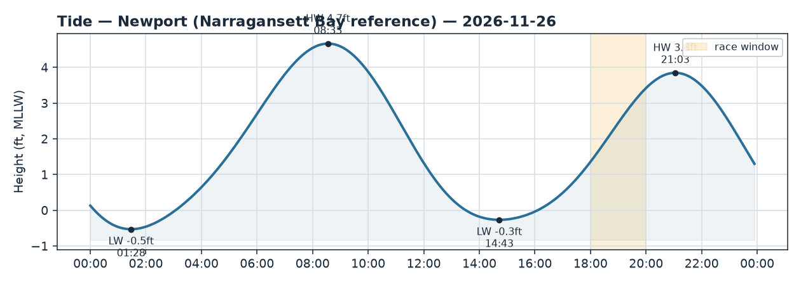
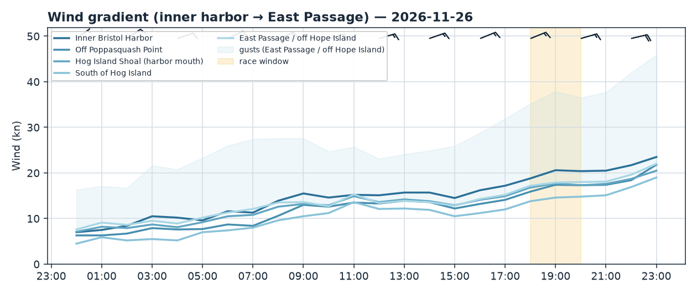
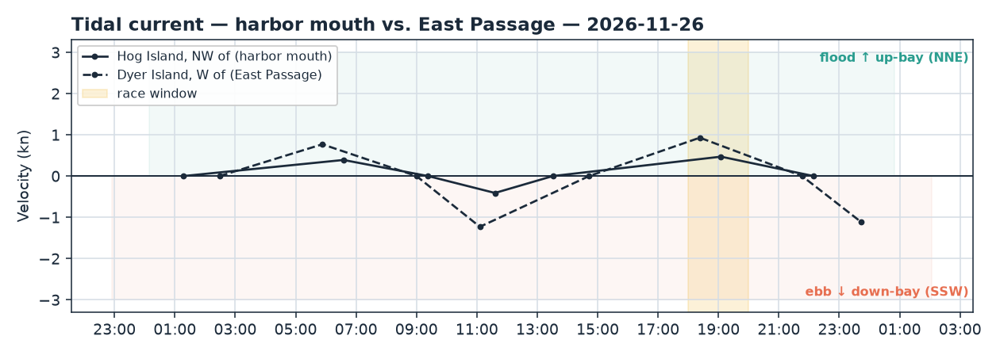

Bristol Harbor · Rhode Island
Thu 26 Nov 2026 · 18:00–20:00
Heavy, puffy ENE nor'easter 15–20 kt gusting mid-30s; flood building NNE up-bay through the window — cold night rain, tide rising to high so no shallow worry.
Wind
A stout ENE gradient (~67–74°) off the land, not a sea breeze — this is the leading edge of a nor'easter (NWS has NE 20–25 kt gusting 35 building toward a nasty Thursday). Expect a race-window average of 15–20 kt with gusts into the mid-30s across every fix — plan to be well depowered and sailing conservatively in the dark.
Pressure is unusually even, even a touch firmer up inside the harbor: Inner Harbor 19.9 kt, Hog Island mouth 17.3, East Passage 17.7, off Poppasquash 16.9. The one soft spot is just south of Hog Island (14.4 kt), but that fix carries a 4.4 kt model spread — treat the lightening there as low-confidence rather than a reliable lane. Everywhere else models agree inside ~2 kt, so the strong-and-gusty story is solid.
Direction is near-steady, veering only ~5° (toward ESE) across the two hours. The tactical wind story is puffiness, not persistent shift — an ENE breeze pouring off the Bristol/Poppasquash land to windward will arrive in puffs and oscillations. Stay in phase with the veers and backs rather than committing to one shore.
Data gap: both live anemometers (Newport, Conimicut) are offline for this window, so strength/direction lean on the model consensus — which the NWS zone forecast backs up.
Current
Flood is building the whole window and peaks mid-race, setting NNE up-bay, into the harbor:
- Harbor mouth (Hog Island NW, ACT2171): slack was 13:31, flood maxes ~0.47 kt at 19:05 (set ~011°), easing toward slack at 22:09. Through 18:00–20:00 you're near peak flood.
- East Passage (Dyer Island W, ACT2156): stronger — flood maxes ~0.93 kt at 18:23 (set ~023°), holding most of the window before slack at 21:46.
So the seaward legs carry real current: up to ~0.9 kt of NNE push in the Passage channel, roughly half that at the harbor mouth, near-slack deep inside the harbor.
Tide
Low water (−0.27 ft) was back at 14:43; the tide is rising all window toward a 3.85 ft high at 21:03. Depth is a non-issue — plenty of water over the shallow marks and committee-boat edges. No shallow caution tonight.
Tactical call
Course-agnostic: This is a heavy-air, boat-handling-first night race in cold rain — clean starts, conservative sail trim, and staying upright will beat clever lane calls. With the breeze a puffy ENE gradient off the land, play the oscillations and stay in phase; don't bank one shore. Pressure is broadly even, so there's no strong "get to the breeze" lever — the firmer numbers are inside the harbor and in the East Passage, the softest patch (low-confidence) just S of Hog Island.
Let the building flood make your current decisions: on any leg heading up-bay / N, ride the stream — it's a free push (strongest, ~0.9 kt, in the East Passage channel). On any leg heading seaward / S, you're stemming it, so avoid the mid-channel NNE set and work the shallower shore edges to duck the worst of it.
If the course is set: - N–S windward/leeward: flood favours the up-bay (N) leg — ride mid-channel pressure going N; on the S leg hunt the edges out of the current. Pressure gradient is weak, so win it on the current and by staying in phase with the ENE puffs. - J-hook out of the harbor: start in near-slack inner-harbor water, then the hook out to the mouth/Passage drops you into real flood — time the turn knowing the NNE set is near its peak and will carry you up-bay. - Around Hog Island: each leg flips the set relative to your heading. Legs trending N/NE get the flood push; S/SW legs punch into it — favour the shore edges there, and respect gusts off the island tips. - Out-and-back (would be a reach/run): heading seaward you buck up to ~0.9 kt of flood in the Passage; coming back up-bay you're carried home. Pressure is nearly flat, so this one is all current — mind the lane, not the breeze.
See the attached tide, wind-gradient, and current plots.
Verification
Scored from the actual anemometer record over 18:00–20:00.
| Station (≈fix) | Forecast | Actual | Speed error | Dir error |
|---|---|---|---|---|
| Newport (East Passage / off Hope Island) | 17.7 kt @ 69° | no obs | — | — |
| Conimicut Light (Off Poppasquash Point) | 16.9 kt @ 68° | no obs | — | — |
Verdict: NO DATA.


